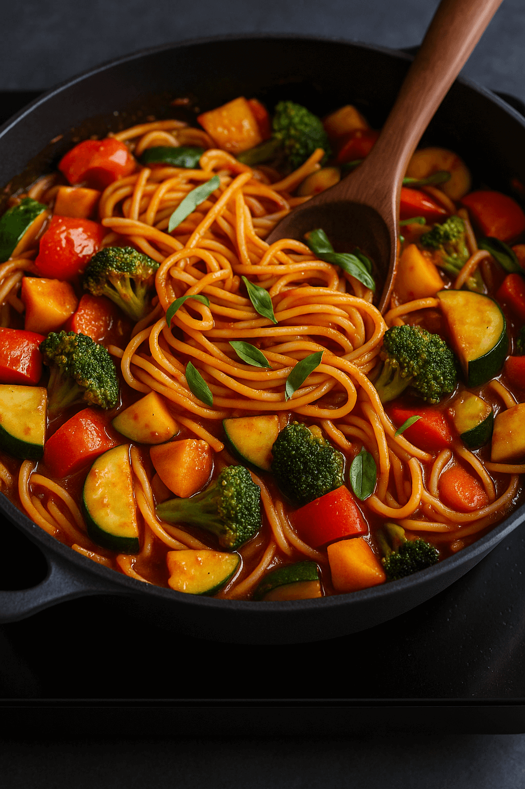

Sebzeli Napoliten Makarna 🍝🥬
Süre: Hazırlık 10 dk + Pişirme 15-20 dk = Toplam 30 dk
- Malzemeler:
- 300 gr makarna (penne veya spagetti)
- 2 yemek kaşığı zeytinyağı
- 1 adet soğan (doğranmış)
- 2 diş sarımsak (ezilmiş)
- 1 adet kırmızı biber (doğranmış)
- 1 adet kabak (doğranmış)
- 200 gr domates püresi
- Tuz, karabiber, fesleğen

Yapılışı:
- Makarnayı tuzlu kaynar suda pakete göre haşlayın (8–10 dk).
- Sos tavasında zeytinyağı ve sarımsağı 30 sn–1 dk yakmadan soteleyin.
- Domatesi, şekeri, tuz/karabiberi ve kurutulmuş otları ekleyin; 8–10 dk kısıkta pişirin.
- (Kullanacaksanız) kabak ve biberleri 3–4 dk sosta yumuşatın.
- Haşlanan makarnayı sosla karıştırın; üzerine peynir serpip servis edin.
Afiyet olsun! 🍽️